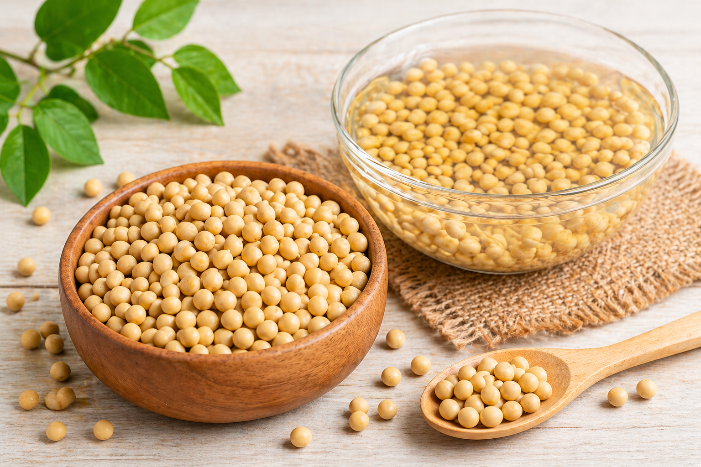
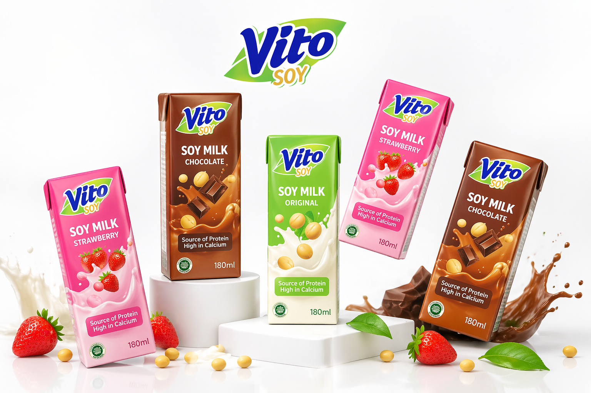

From the finest soybeans to a refreshing sip, discover the meticulous process that goes into creating every bottle of Vitosoy.

The journey begins with carefully selecting the highest quality, non-GMO soybeans. These premium beans are then thoroughly cleaned and soaked in pure water, allowing them to soften and prepare for the extraction of their rich nutrients.
Once perfectly soaked, the beans are finely ground with fresh water. This crucial step breaks down the beans to release their natural oils, proteins, and that distinct, creamy soy flavor that forms the foundation of our beverage.
The raw soy extract is then meticulously heated to perfection to ensure safety, enhance digestibility, and refine the taste. Finally, it undergoes a rigorous filtering process to achieve the silky smooth texture that Vitosoy is known for.

Here it is: the finished Vitosoy! The freshly filtered soy milk is perfectly packaged to lock in the flavor, nutrients, and goodness. Ready for you to enjoy a delicious, healthy beverage anytime, anywhere.